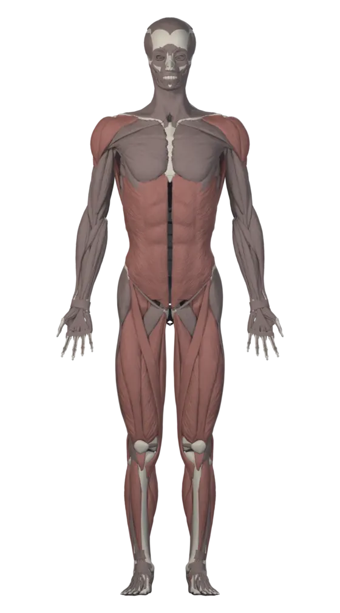
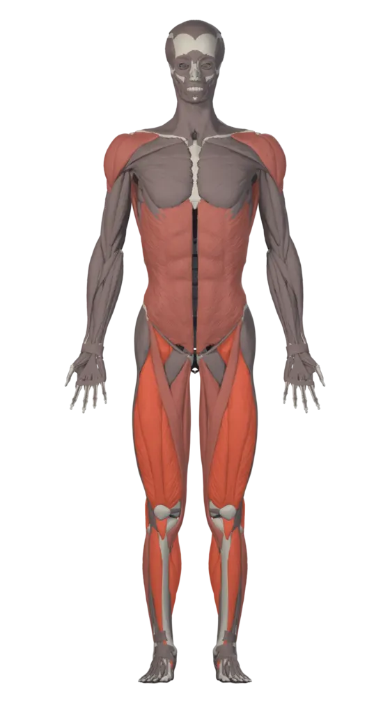
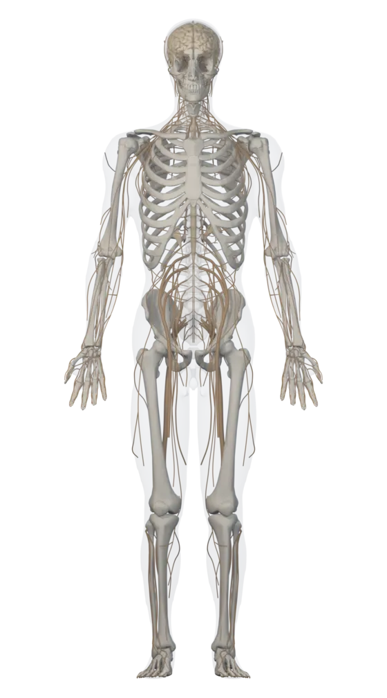
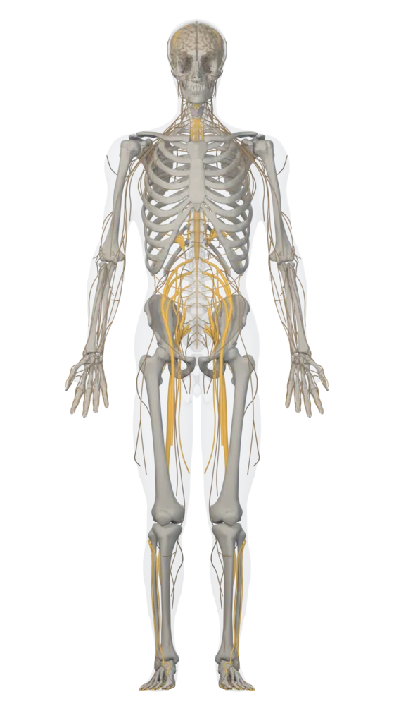
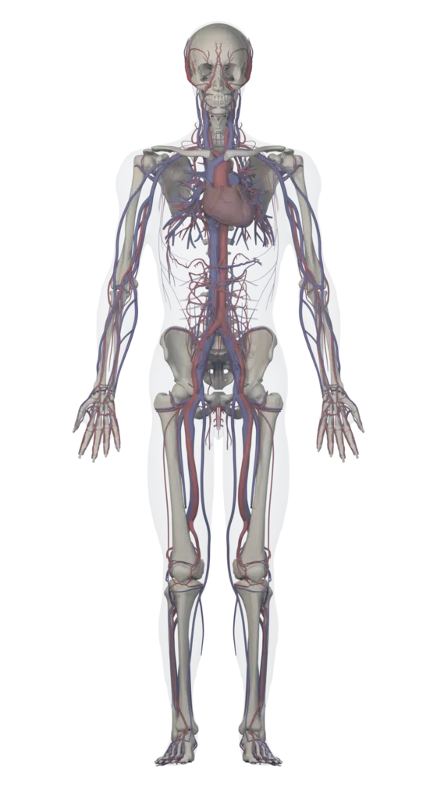
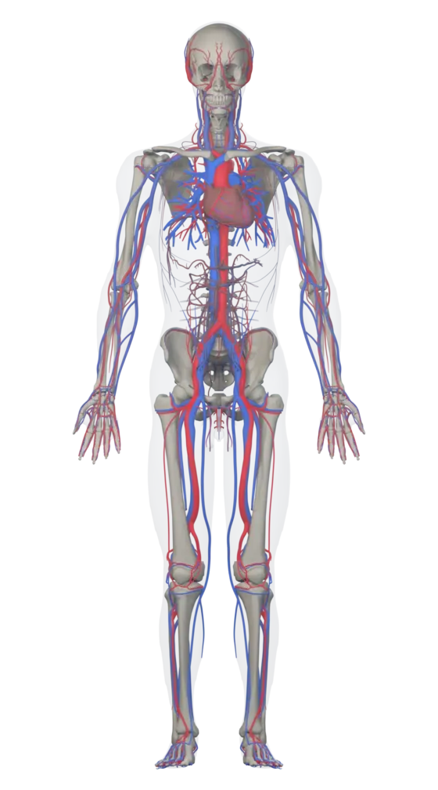

ATLASJeden interwał· 1,8 m · ciało
INTERWAŁ 1 / 6 · PRACA
00:00
—
MAKIETA REŻYSERA · liczby celowo puste
PRZEWIDŹ, ZANIM ZOBACZYSZ
ZOBACZ W ŚRODKU → FILMAkt III · krwiobieg
wejście w naczynie udowe, ta sama chwila interwału
wejście w naczynie udowe, ta sama chwila interwału
SAM ZBADAJPlansza: Układ krwionośny
spoczynek · sprint · co się zmieniło
spoczynek · sprint · co się zmieniło
DALEJInterwał 2 z 6
co się kumuluje z każdą serią
co się kumuluje z każdą serią
PRACA 45 sPRZERWA 45 s